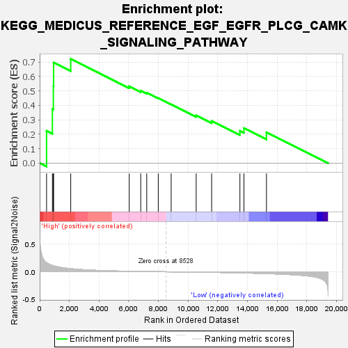
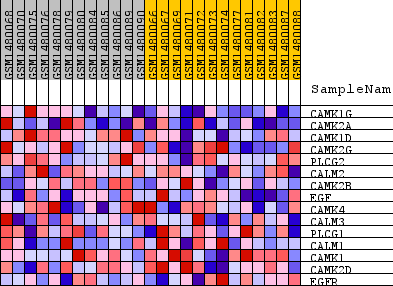
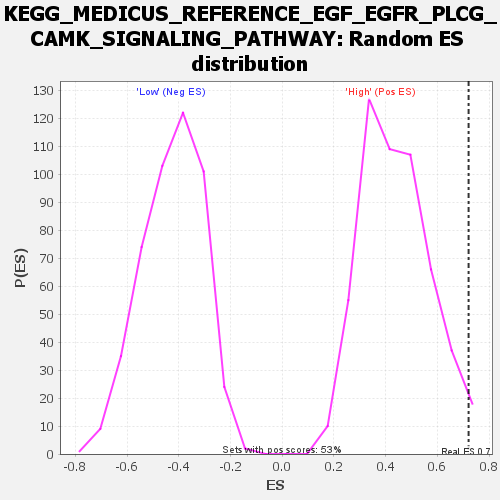

| Dataset | WG6v3.CYGB.cls#High_versus_Low.CYGB.cls#High_versus_Low_repos |
| Phenotype | CYGB.cls#High_versus_Low_repos |
| Upregulated in class | High |
| GeneSet | KEGG_MEDICUS_REFERENCE_EGF_EGFR_PLCG_CAMK_SIGNALING_PATHWAY |
| Enrichment Score (ES) | 0.7209386 |
| Normalized Enrichment Score (NES) | 1.6388347 |
| Nominal p-value | 0.017013233 |
| FDR q-value | 0.17250851 |
| FWER p-Value | 0.808 |

| SYMBOL | TITLE | RANK IN GENE LIST | RANK METRIC SCORE | RUNNING ES | CORE ENRICHMENT | |
|---|---|---|---|---|---|---|
| 1 | CAMK1G | CAMK1G | 464 | 0.165 | 0.2235 | Yes |
| 2 | CAMK2A | CAMK2A | 858 | 0.114 | 0.3743 | Yes |
| 3 | CAMK1D | CAMK1D | 922 | 0.109 | 0.5346 | Yes |
| 4 | CAMK2G | CAMK2G | 938 | 0.108 | 0.6963 | Yes |
| 5 | PLCG2 | PLCG2 | 2092 | 0.056 | 0.7209 | Yes |
| 6 | CALM2 | CALM2 | 6032 | 0.009 | 0.5320 | No |
| 7 | CAMK2B | CAMK2B | 6807 | 0.006 | 0.5011 | No |
| 8 | EGF | EGF | 7212 | 0.004 | 0.4870 | No |
| 9 | CAMK4 | CAMK4 | 7988 | 0.002 | 0.4498 | No |
| 10 | CALM3 | CALM3 | 8856 | -0.001 | 0.4066 | No |
| 11 | PLCG1 | PLCG1 | 10542 | -0.007 | 0.3298 | No |
| 12 | CALM1 | CALM1 | 11583 | -0.011 | 0.2921 | No |
| 13 | CAMK1 | CAMK1 | 13488 | -0.020 | 0.2235 | No |
| 14 | CAMK2D | CAMK2D | 13760 | -0.022 | 0.2420 | No |
| 15 | EGFR | EGFR | 15276 | -0.033 | 0.2136 | No |

